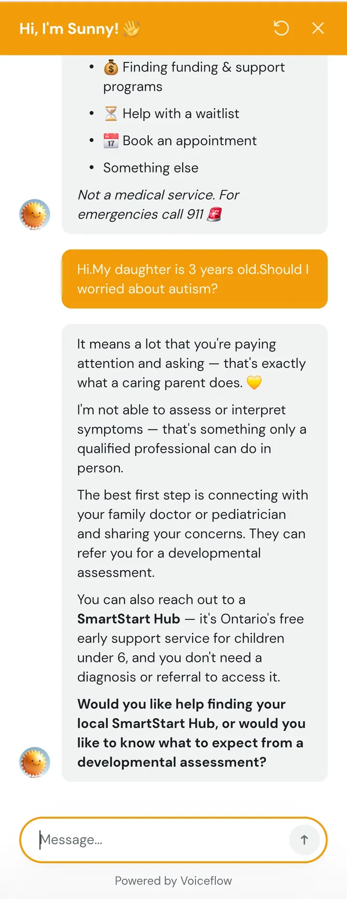

Question askedMy daughter is 3 years old. Should I worry about autism?
What Sunny didShe said she cannot assess symptoms. She sent the parent to a family doctor or pediatrician, and to a SmartStart Hub, which needs no diagnosis or referral.
Worked
She did not diagnose, and she gave two clear next steps.